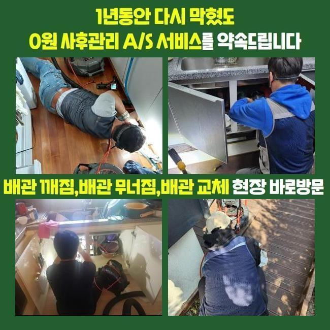
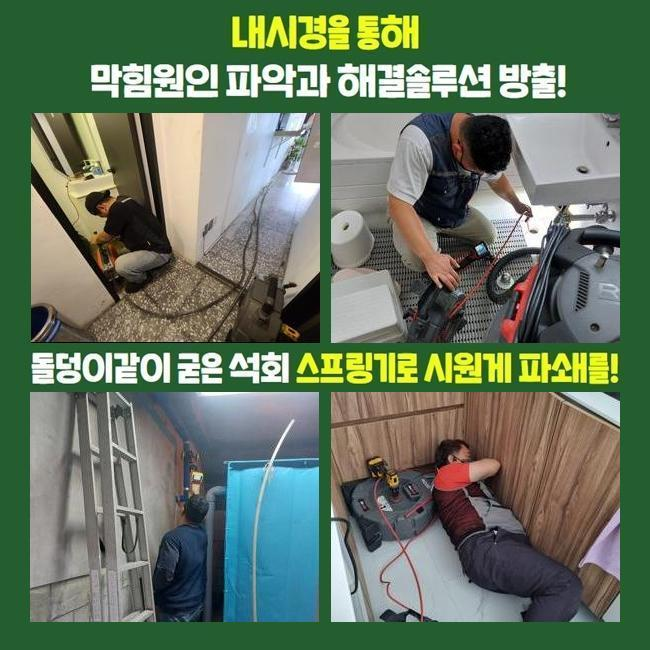
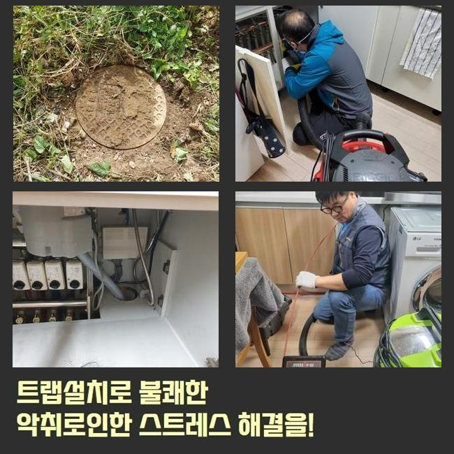
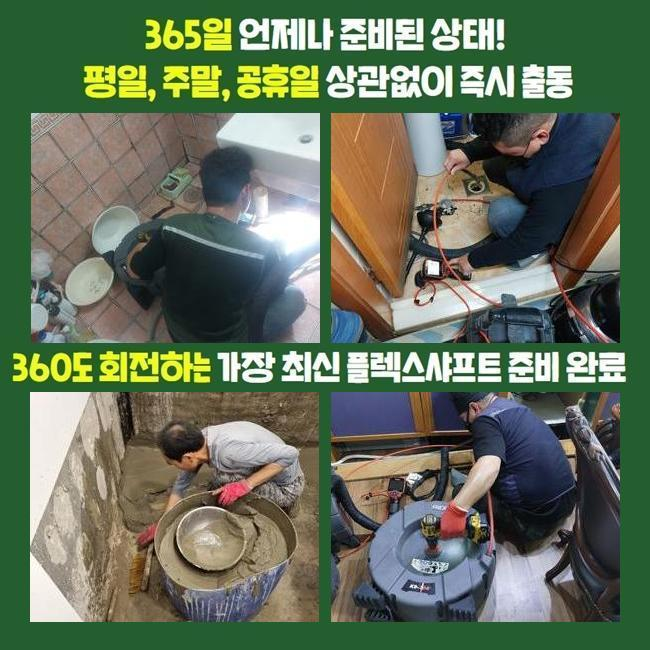
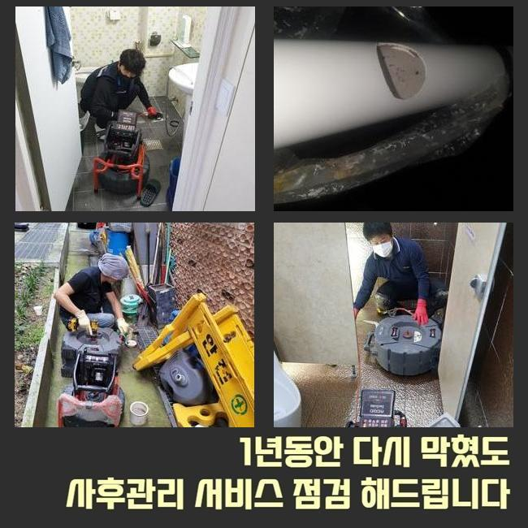
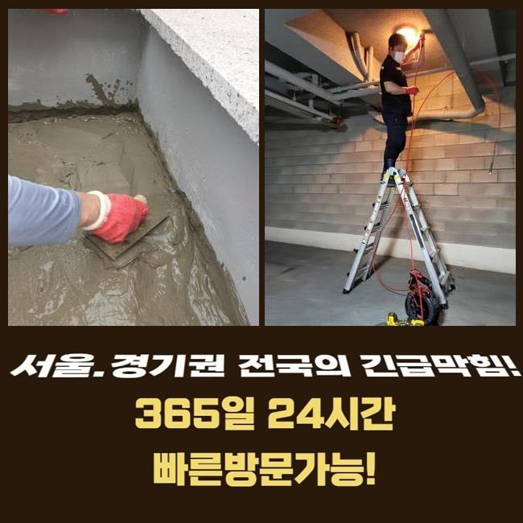

🏠 용인 중앙동세탁실역류 원삼면 하수구청소 설비업체
용인 중앙동 싱크대막힘 전문 시공 후기

📋 작업 개요
- 위치: 용인 중앙동, 중앙동, 용인
- 서비스 유형: 싱크대막힘, 하수구막힘, 배관막힘, 역류해결, 뚫는업체, 배관청소
- 작업 일시: 2025. 2. 1. 17:36
- 업체명: 하수구수사대 (010-5615-2118)
🔍 문제 상황
용인 중앙동세탁실역류 원삼면 하수구청소 설비업체
며칠전 사무공간의 싱크대쪽에서 야기된 배수장애를 시정한 사례를 소개할 예정이에요
간단하며 참고할만한 사항이 많으니 집중~!
오피스라는 현장에서 야기된 일이다 보니 자가조치들로 해결하려는 시도도 보였는데요
전문가들은 수리계획들을 어떤수순으로 이행하는지 더나아가 배관을 지켜내는 꿀팁도 쉽게 정리하겠습니다
의뢰인은 근무하실때 요리등을 하는 장소가 아니였기에 배관막힘이 없을것으로 여겼다고 말하셨어요
이곳의 경우 음식을 사용할 일이 없는 장소라서 철저히 예방책 실시가 결여된 경우들이 많죠
저희업체는 기기들을 준비해 방문을 드려봤어요 당도하여 각 관로들을 체크해봤죠
우선 육안으로 확인하니 물들이 솟구치는 상황은아니였지만 느린 속도로 배출되고 있었는데요
이럴땐 예기치못하게 압력이 상승하고 역류해버리는 문제들이 생겨날 확률이 다분해요

🔎 원인 분석
💡 전문가 진단: 정밀 진단 장비를 사용하여 슬러지의 고착 여부를 판명하고 타격/세척 작업을 실시했습니다.
그리하여 석션으로 불리우는 전문기계를 꺼내 잔존하는 하수들을 제거했는데요
석션도구는 점검과정보다 먼저 수월한 관찰을 위하여 운용하기도 하며 고착되지 않은 잔해를 청소해줄때 훌륭한 역할들을 수행합니다
썩션통에 오수와 이물이 담겨있었지만 그럼에도 더디게 흘러갔는데요
석션도구의 운용 이후에는 내시경장치로 깊숙한 부분도 체크했죠
내시경케이블을 투입시키니 기름들이 축적되어 배관구경이 좁혀지게된 상태였습니다
식재료 이용을 하지못하는 공간들인데 어째서 이물들이 축적되었나 의문이 들 수 있겠으나 다중 이용 시설은 정기적인 청소들이 결여되는 곳이 많죠
우선은 과자나 커피찌꺼기라던지 기름이 뒤섞여 슬러지들을 만들어내요
내시경장비로 하수도를 주시하면서 샤프트기기로 흡착물들을 타격하며 천천히 하수관을 청소해주니 공간들이 만들어지며 배수영역이 넓어지게 되었습니다
기름의 형상은 관찰 시에 불그스름한 색을 띄므로 기름들이 없어지면 영상화면도 선명하게 변화되는걸 관찰할 수 있습니다
스케일링을 이행했음에도 물이 하수관으로 원활하게 안흘러가는 상태로 파악했습니다
그리하여 많은 수도를 배수라인으로 흐르게했더니 어떤곳인지 고여서 통수장애가 나타나는 문제들이 있었습니다

🔧 작업 과정
물들이 고임현상을 보이는건 놓치게된 요소들이 아직 있을거라는 것을 방증하는것이죠
이물질외에 놓친 요소가 아직 있을거라는 걸 의미하기에 출수부분까지 들여다볼 여지가 충분했죠
저희전문진은 계속적인 문제들의 연유를 찾고자 내시경기기의 줄을 깊게 투입시켰습니다
그러던 중 새로 안 사실은 배수라인의 특정부분이 바닥부분에 매립된 모습이 아니였고 바깥부분으로 드러난 채로 자리했다라는 점이였죠
실내부터 내시경으로 확인해주는게 까다로워서 바깥에서부터 역으로 기기들을 사용하도록 특정부분을 뚫은 후 해당 지점에 내시경 내시경케이블을 삽입시켰습니다
내시경기기의 줄을 넣으니 이물들로 막혀버린 공간을 발견했죠
사무실에서부터 관로들이 연결되질 못했으며 욕실 쪽으로 가는 라인과 외부로 뻗어나가있는 구조였어요
계속 그 길 따라서 가보니 세면대배수관에 폐기물이 배수관을 막아선 모습이였습니다
주방쪽의 관로가 아닌 뜻밖의 장소에 사이즈가 컸던 오염물이 존재하여 인지하기까지 애를 먹었지만 결국 지속적인 막히는 문제의 주된 까닭을 찾아냈습니다
재차 위치들을 체크하고 점검해야하는 지점의 pvc 하수도를 타공해 이물들을 제거시켰습니다
배출시켰더니 모서리가 둥글었던 고무같은것이였는데 왜 사용되었는지 알 길이 없었으나 사이즈가 컸으며 특정 구간에 박혀있으면 배수자체가 불가한 것이 당연한 물질이였죠
씽크대라인의 배관과 함께 정체들을 발생케하는 이물질들도 없애는 과정들을 진행했더니 배수과정이 복구되었고 수리들이 마무리되었는데요
그리고 의뢰인분은 악취문제도 문의하셨어요 작업을 하면서도 느꼈지만 냄새들도 발생하는것을 확인하게되었어요
트랩쪽에 결함이 남아있었습니다 현장에서 정리하고 새로운 트랩부품으로 교체도 오차없이 해드렸습니다
최종점검을 하고자 탕비공간의 싱크대쪽에 수도를 틀어 내려보니 처음과는 비교도 안될정도로 이상없이 흐르게되었어요
금일의 통수가 안되는 트러블도 이상없이 바로 잡혔어요


✅ 작업 완료
다행스럽게도 고객님을 괴롭혔던 문제의 까닭들을 추적한 끝에 결국 막힌 까닭을 찾았고 개수대의 이용까지도 가능하게되었어요
이처럼 고객이 추후에도 불편하지 않게끔 일련의 과정들을 완료했답니다
이용하는 시점에 싱크볼로 기름들과 잔해들이 못들어가게 유의해주셔야하고 점검도 정기적으로 진행해주시면 좋습니다
저희전문진은 재발되지 않는 수리에 몰두합니다 이에 저희들이 저희들이 왔다간 후 청소해준 부분에서 재발되면 다시 찾아뵈어 as까지 수행하고 있어요
통수가 안되는 사태가 벌어져 전문진의 출장을 생각하고 있으시면 저희업체에게 문의하시는건 어떠십니까?



⚠️ 주방 싱크대 배관 막힘 예방 수칙
- ✅ 기름기가 묻은 식기나 프라이팬은 설거지 전 키친타올로 반드시 기름때를 닦아내세요.
- ✅ 주기적으로 싱크대 개수대에 뜨거운 물을 가득 받아 한 번에 내려 배관 내부 기름을 씻어내세요.
- ✅ 배수구 거름망을 미세한 필터로 사용하시고 음식물 찌꺼기가 틈으로 새어 들지 않게 관리하세요.
- ✅ 베이킹소다와 식초를 뜨거운 물과 함께 일주일에 한 번씩 부어주면 배관 살균과 막힘 예방에 좋습니다.
💡 핵심 정리
- 확실한 장비 작업(내시경 점검 및 샤프트 스케일링)으로 원인을 뿌리 뽑습니다.
- 작업 후 1년 이내에 동일한 부위 재발 시 100% 무상 A/S 서비스를 보장합니다.
- 서울 · 경기 · 인천 전 지역에 24시간 언제든 긴급 출동할 수 있도록 항시 대기 중입니다.
❓ 자주 묻는 질문 (FAQ)
🚨 용인 중앙동 싱크대막힘 문제로 고민이신가요?
정확한 원인 진단과 확실한 시공으로 재발 없는 해결을 약속드립니다.
24시간 긴급 출동 | 서울 · 경기 · 인천 전지역 | 1년 내 재발 시 무상 A/S